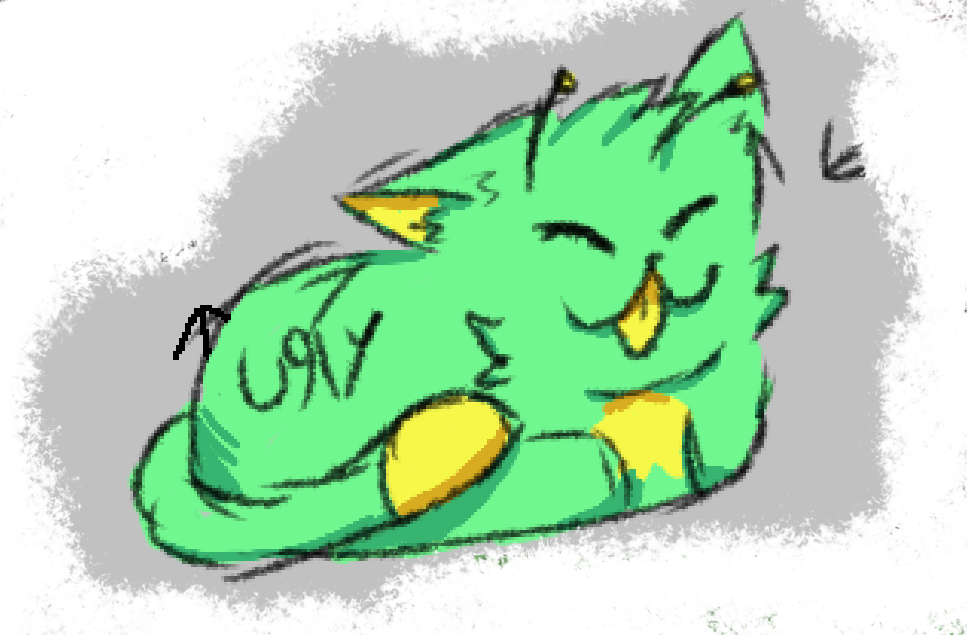
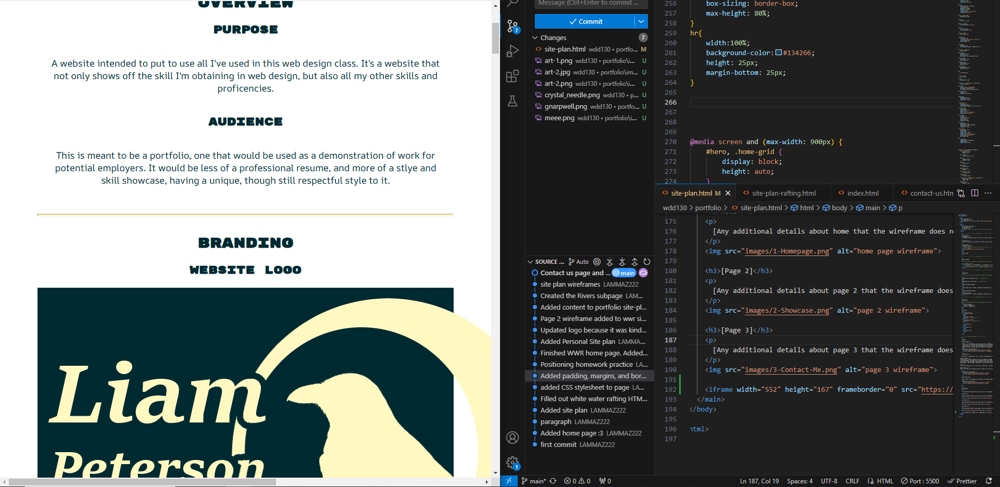

The Showcase
Welcome to The Showcase! This is a small representation of my work, and most things I have released publicly. Keep in mind that I’ve done a lot more projects that were personal and mainly used as a way to learn and develop a new medium and skill that aren’t shown here. But anyways, hope you like what you see, and enjoy!
Game Jam Games
A Game Jam is a small competition put on by someone, designed to be a game dev competition! You’re given a specific theme or item to work around, and are given a very limited amount of time to create a video game. The timeframe for these three Jams were 48-72 hours, a mere 2 or 3 days
Two Lane Highway: This game had a timeframe of 48 hours, and the theme was “Two”. I hadn’t had much experience at the time, so it’s a simple arcade game with poor music. It’s a small game, but one I still had fun making, especially in the time given.
Fresh Field: This game had a song you had to make a game around rather than a theme. It also had a 48 hour timeframe, and I took a much different approach with this one, making it more of a puzzle farming game.
Robo-Sapien - Learn Freedom: The theme for this one was “Failure is Progress” and we had a 72 hour timeframe. I really pushed myself with this one, delving into aspects I had never dealt with, and I’m pretty proud of the result.
Art
A lot of my digital art is in the form of pixel art. I started with this medium early on to work with my games, and I did a bit of creative drawing too, rather than just video game sprites. Recently, I got into sketching, and even dealt with a few forms of coloring, however, my next big thing is going to be learning digital line art. You can see some of my work on that in the home and contact me pages too! I’m also proficient with photo editing like photoshop to create other visual things.




Web Design
Well, just look at the website you’re on right now! All the assets and design of this website were created by me for a web design course in college. It displays how proficient I am with HTML, CSS, and visual creation.